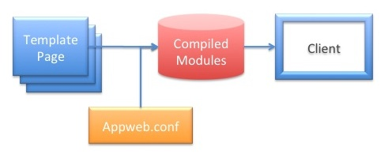

Web Pages and Templates
ESP Templates are web pages that allow you to determine what goes into the web page at runtime. Whereas static HTML web pages must be fixed at development time, ESP template pages can embed HTML and data at runtime and on a per-user basis. While there are many different ways to render data at runtime, ESP provides one of the easiest and most powerful template frameworks without compromising speed or memory footprint.
The ESP templating solution provides powerful embedding of "C" code in web pages, transparent compilation, caching of code and responses and a rich library of HTML controls to quickly generate dynamic tables, tabs, lists, input forms and more. These are integrated with the jQuery client-side library for rich, client side processing and Ajax support.
Embedded C Code
ESP templates are essentially HTML pages with embedded "C" code that are parsed into pure "C" code and then compiled into native machine code for exceptionally fast execution.
<h1>Hello World</h1> <h2>Today is <%= mprGetDate(0); %></h2>
Why "C"?
Why "C" code, you may ask? Because we wanted ESP to provide the ultimate in speed and efficiency. The "C" is the fastest, closest to the hardware, language available. By using "C", invoking device APIs and other system APIs are easy, fast and compact. There is no translation or coupling required getting into and out of another language.
To enhance the ESP development environment, ESP adds a rich library of HTML controls, and garbage collection for managing memory. This makes working with "C" embedded web pages, expressive and productive.
Transparent Compiling
ESP web pages are parsed and converted into "C" code include all HTML and embedded "C". The result is then compiled and optimized into a native code shared library module. Once compiled, the module is cached in-memory and saved on disk and when required, are loaded into memory for execution. Once loaded, subsequent requests will use the in-memory code without any access to the original template web page. If the system is rebooted, the on-disk cached module will be loaded without recompilation.
The compilation of ESP pages happens automatically and quickly in the background when in development mode. If the original web page is modified, the page is transparently recompiled and re-cached. For production, pages can be pre-compiled, and locked-down without recompiling in the field. This updating behavior can be controlled by the EspUpdate configuration directive.
Configuration
The appweb.conf configuration file controls how ESP compiles and links template pages into modules. It does this by special ESP configuration directives.
Each Appweb Route may contain a unique set of ESP directives, or it may inherit the configuration from the default or outer routes.
The standard appweb.conf includes an ESP configuration file esp.conf that contains default ESP compilation and link command lines for each operating system. On Unix based systems, the esp.conf file is located at /usr/lib/appweb/lib/esp.conf. On windows systems, this will be located at /Program Files/Embedthis Appweb/lib/esp.conf. You may need to customize this file to suit your system or compilation environment.
ESP Configuration Directives
- EspDir — This defines the directories that ESP will search and use when compiling template pages.
- EspCompile — This defines the commandline used to compile template pages and controllers.
- EspLink — This defines the commandline used to link template pages and controllers as shared libraries.
- EspEnv — This defines environment variables required when running the compile and link commands.
- EspUpdate — This controls if ESP will automatically reload modified modules and transparently recompiled modified ESP source template pages.
Layouts — Creating a Consistent Look and Feel
Highly usable applications have a consistent structure, menus and appearance so the user can easily navigate that application. Such applications typically consist of many web pages that share a common look and feel. However, designing and maintaining that consistency is sometimes a challenge.
ESP Templates provide a powerful and flexible solution for implementing a consistent UI. ESP template pages use layout pages that define the look and feel of an application. Content pages are then rendered by merging with one or more layout pages that define the look and feel of the application. This creates a composite page that is what the user will actually see. In this way, a web application can easily maintain a consistent look and feel without repeating boilerplate code from page to page. ESP believes strongly in the DRY principle: "Don't Repeat Yourself". Web page parts that are repeated from page to page are centralized in ESP applications into layout pages and not repeated in each content page.

For example: this is a layout page called "layouts/default.ejs" that defines the top level HTML content for all content pages. It has a banner image and division tags that structure the page:
<html>
<body>
<div class="top">
<img src="banner.jpg" />
</div>
<div class="content">
<%@ content %>
</div>
</body>
</html>
Modifications to this page, will be reflected automatically in all content pages.
Content Pages
A content page defines only the HTML and code that is unique for a specific page. It is merged with a layout page by inserting the content and replacing the <%@ content %> tag in the master page.
For example, consider the content page named "views/demo-index.esp":
<h1>Content Page</h1> <p>Hello World</p>
This would render a composite web page back to the user:
<html>
<body>
<div class="top">
<img src="banner.jpg" />
</div>
<div class="content">
<h1>Content Page</h1>
<p>Hello World</p>
</div>
</body>
</html>
Alternate Layout Pages
A content page can request a specific layout page by using the <%@ layout "file"> directive.
<%@ layout "alternateLayout.esp"> <h1>Content Page</h1> <p>Hello World</p>
This instructs the templating engine to use the "alternateLayout.esp" file rather than the default layout. The default layout page is called "layouts/default.esp".
Multiple Layout Pages
You are not restricted to a simple two level layout and content page scheme. A layout page can itself refer to another layout page to gradually build up the application's look and feel. To do this, the layout page needs to include an explicit <%@ layout "file"> directive.
Application Paradigms
ESP supports two primary application paradigms:
- Stand-alone Web Page
- Model View Controller
Model View Controller Applications
The Model View Controller (MVC) paradigm is characterized by Controller actions that are invoked when client HTTP requests are received. The controller responds to the request and determines what action will be taken including what view (if any) will be rendered back to the client. The controller manages the flow of execution for the application and are stored under the "controllers" directory. ESP templates in an MVC application are called Views and are stored under the "views" directory. These views utilize template layout pages from the "layouts" directory. The esp utility command is typically used to generate and manage ESP MVC applications.
Stand-Alone Page Applications
The Stand-alone application paradigm is characterized by individual ESP template pages that do not have controllers. They may utilize template layout pages, but application controller logic is held within the page itself. These applications typically use a "Post-Back" paradigm where a form will post back to the same page that was used to render the form.
Directory Structure
ESP follows the Convention over Configuration design paradigm where developers only need to specify the unusual parts of their application. This is exemplified by an expected directory structure for views and layouts.
+-- cache | + Cached modules for controllers and template web pages +-- controllers | + MVC Controller files +-- db | + Database files +-- layouts | + Layout pages... +-- static | + Static web pages (and stand-alone ESP pages) +--views | + MVC View pages...
For ESP MVC applications, The esp application generator program will create these directories for you when you run
esp generate app appName
After creating the application, you should name views using the form:
views/CONTROLLER-VIEW.espThe view name should all be lower case.
ESP Page Directives
The following directives are provided:
| Directive | Purpose |
|---|---|
| <%@ include "file" %> | Include the named file at this location |
| <%@ layout "file" %> | Use the specified layout file for this page |
| <%@ content %> | Used in layout pages to specify where the content should be inserted |
| <%^ global ... | Specify that the code from this block must be at a "global" C scope. This is useful for global declarations, extern statements and #include statements. |
| <%^ start ... | Specify that the code from this block will be positioned at the start of the generated function for the template. This is useful for local variable declarations. |
| <%^ end ... | Specify that the code from this block will be positioned at the end of the generated function for the template. |
| <%= expression %> | "C" expression |
| <%= [%fmt] expression %> | Formatted "C" expression. The expression is passed through a "printf" style formatter. Use "%S" for HTML-escaped safe strings. |
| <% statements %> | "C" statements |
| <-%> | Trim the trailing newline for the generated block |
| @@variable | Request parameter variable. This is equivalent to "param(variable)" |
| @#field | Record field variable. This is equivalent to "ediGetField(getRec(), field))" |
<%@ include "file" %>
This directive can be used to include other HTML or ESP files at this location. The included contents will be parsed as an ESP page and the results substituted at this location. ESP include directives can be nested to an arbitrary depth.
<%@ layout "file" %>
The layout directive specifies the filename of the layout page to use. If set to the empty string "" then no layout page will be used. The default layout page is layouts/default.esp
<%@ content %>
This directive is used only in layout pages to specify where the content page should be inserted. There should be only one such directive in a layout page.
<%^ global ....
This directive specifies that the code from this block must be at a "global" C scope. This is useful for global declarations, extern statements and #include statements.
<%^ start ...
This directive specifies that the code from this block will be positioned at the start of the generated function for the template. Some "C" compilers do not allow variable declarations to be place other than at the start of a block. So this directive is useful local variable declarations.
<%^ end ...
This directive specifies that the code from this block will be positioned at the end of the generated function for the template.
<%= expression %>
Use this directive to embed the result of a "C" expression. The result must be a null-terminated string. This example below calls the mprGetDate function which returns the local date and time as a string.
Today is <%= mprGetDate(0); %><
Note that the string returned from mprGetDate was not freed. This is because Appweb and ESP use a Garbage Collection and so such returned data does not need to be freed. This permits the use of a chaining style of programming where the outputs of one function can be used as arguments to others. For example:
Resource name: <%= mprJoinExt(mprJoinPath(dir, supper(name)), "jpg") %>
<% statements %>
Use this directive to run "C" code statements. No value is substituted back into the page in place of the directive. If you need to write data inside a statement block, use the render API
<%
for (i = 0; i < 10; i++) {
render("I is %d <br/>\n", i);
}
%>
Security Note: you should never use render to write back user data that has not been validated. If you must render user input data, use renderSafe which will escape any HTML sequences. This is essential to avoid XSS and other security issues.
You can also iterate over regular HTML code. The following code will display Hello World ten times in the web page.
<% for (i = 0; i < 10; i++) { %>
Hello World
<% } %>
@@variables
ESP provides a shorthand for accessing request parameters. Request parameters are a collection of query variables, posted form fields, routing tokens, session variables and any explicitly set parameters. These are stored in a params table and in session data stores and are accessible via the param, espGetParam and espGetSession APIs. However, the @@variable directive provides an easier way. With this directive, the params and session data are examined (in that order) for the given variable name.
In this example below if the URI: http://example.com/test.esp?name=John was used the following ESP template could be used to access the "name" query value.
<h2>My name is @@name</h2>
This directive is very useful for accessing any request, form, query or session data.
@#field
ESP provides a shorthand for accessing field data in the current database record. Controllers will often setup the environment for a view by defining a "current" database record. The @#field directive provides an easy way to access any field in the current record.
If a controller defined a current "user" record, this example below would extract the "name" field for display.
<h2>My name is @#name</h2>
Request Context
The full HTTP request context is provided by a set of objects. These include:
- Request Params — Request query and form data
- Session Data — Persistent session data saved across requests
- Conn — Connection object. Holds data pertaining to the socket connection.
- Rx — Receive object. Holds data pertaining to this HTTP request.
- Tx — Transmit object. Holds data pertaining to the response for this request.
- Host — Host object. Holds data for the host/virtual host serving the request.
- Route — Route object. Holds details regarding the route managing the request.
- EspRoute — Additional ESP specific route state
- EspReq — Additional ESP specific request state
The Rx, Tx, Host, Route, EspRoute and EspReq objects are all addressable from the Conn object.
Here is a collection of especially useful context items:
| getConn() | Get the current connection object. Can be used inside controllers and template web pages |
| conn->rx | Request object |
| conn->tx | Transmit object |
| conn->host | Host object |
| conn->route | Route object |
| rx->method | HTTP method string |
| rx->uri | Request URI |
| rx->pathInfo | Request path information after the scriptName |
| rx->scriptName | Script name portion of the request URI |
| tx->filename | Resource filename being served |
| tx->ext | Resource filename extension |
| tx->finalized | Set if response output has been completed |
| route->dir | Document root directory for the route |
See the Native APIs document for more details about the available APIs.
Compilation
When developing, ESP will automatically detect changes made to the applications code and will intelligently recompile the necessary portions of the application. You can manually force a recompilation via the esp command.
esp compile
See the Application Generator documentation for full details.
Debugging
You can inject debugging code into your views to trace data to the appweb log file or back to the client's browser.
The mprLog function will print its arguments to appweb log file.
To send trace to the browser, use the render method to write data back to the browser.
HTML Controls
ESP provides a rich set of HTML controls that can be used inside template pages and controllers to generate HTML components. Some of the important controls and functions are:
| Control Name | Description |
|---|---|
| anchor | Emit an anchor link |
| chart | Emit a graphic chart |
| endform | End an input form |
| flash | Emit a flash message area field |
| form | Emit a HTML form |
| format | Format data according to a format renderer function |
| link | Make a URI link for an action and controller |
| progress | Emit a progress bar |
| redirect | Redirect the client to a new URL |
| render | Render a data back to the client |
| renderView | Render a specified view to the client |
| table | Render a smart table |
| text | Render a text input area |